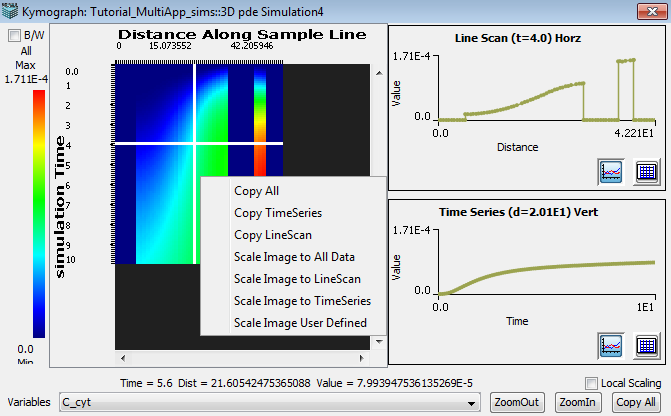

Kymographs
The kymograph tab, which displays line scans over time,
will become active on the results panel once a line is
drawn over the image data. The kymograph dialog displays the data in a visual image format where the distance of the line is plotted against time as well as in a multiple graph format. Two graphs dis- play the concentration of the selected variable plotted over distance and over time. These plots will update according to the position of the crosshair, which is created with the mouse, in the image data panel. In addition, each graph has a mouse menu feature for additional plot settings, see above.

-
Variable - Select data variable.
-
Zoom In/Out - Select either button to change zoom display of image data.
-
Copy all - Use this function to paste data into a program other than the Virtual Cell.
-
Local Scaling - Select this checkbox to change the minimum and maximum y-axis values used to plot the 'Line Scan' and Time Series' graphs.
The y-axis min and max are calculated separately for 'Line Scan' and 'Time Series' using only the data to be plotted instead of the whole kymograph data set.
-
Image Data Mouse Menu - Use the right mouse button, over the image data to access the following options:
'Copy All', 'Copy Time Series', 'Copy Line Scan', 'Scale Image to All Data', 'Scale Image to Line Scan', 'Scale Image to Time Series' and 'Scale Image User Defined'.
'Copy ...' menu items transfer data to the clipboard for use in non VCell programs (e.g. spreadsheets).
'Scale ...' menu items recalculate the minimum and maximum values used to create the display colormap.